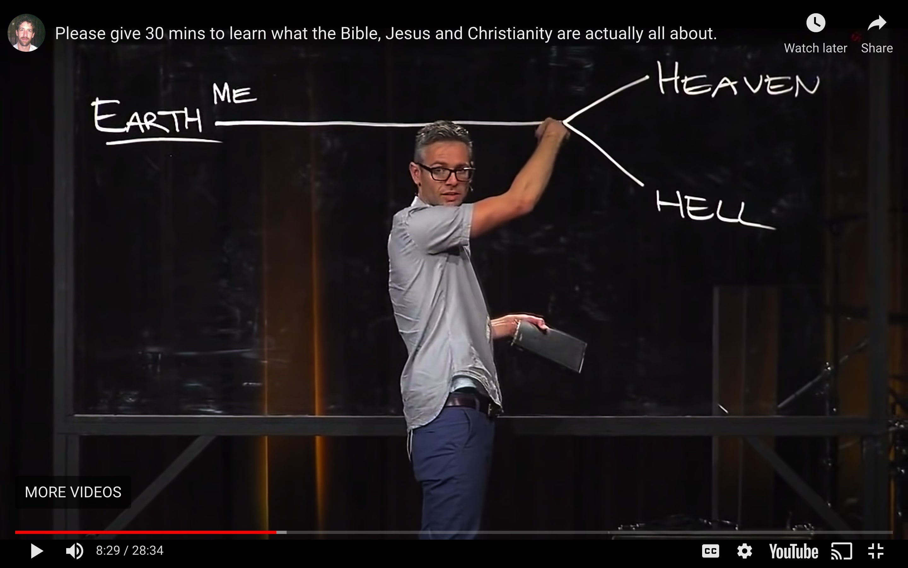

Get the Hell out of here!
Heaven is Optional
I view the Bible as required reading in the class of life.
It doesn't mean I want to read it, but it means I have to if I want to pass the class. I at least have to pay attention in class or read the cliff's notes. Otherwise, my teacher may not be so forgiving when I try to turn a 79 into a B- at the end of the schoolyear.
Any respectable atheist or agnostic intellectual will at least have a cursory understanding of the bible. So I watched this video. It talks about the general idea most people have about what Christians believe, vs. what the bible actaully says. I think this guy does a really good job at humbling himself and acknowledging that the story of the bible is much more complex than the ways people have tried boiling it down.
He draws on a chalkboard a diagram that shows a person living their life on the way to a verdict of either heaven or hell, which is the popular consensus of what people think Christians believe, and then he dismantles that argument.
Although there are some parts of the bible that mention seperating the wheat from the tares, Jesus says on Earth, "Repent. The Kingdom of Heaven is at hand". In other words, Jesus says Heaven is on Earth with him at that moment. They overlap.
Then this guy uses a ven diagram in a video to illustrate that concept. What I want to talk about is his analysis of Jesus as a physician.
We as people may detest child molestors and villians of that sort, however, we try to catch them in the act, or after the fact, and throw them behind bars to physically prevent them from hurting others.
Jesus, however, tries to address the root of the problem. Lust. It is the desire to exploit others for one's own pleasure that creates the problem in the first place. We have a society where we have largely agreed we should let children turn 18 before we can engage in acts that bring ourselves pleasure. The crime is that some people are not willing to wait for the sake of the mental health of the child. Some people are lustful to the point where it doesn't matter how it affects the object of their lust. They just want pleasure for themselves.
Lust itself is the root issue. If there was no lust in the hearts of men, no underage girls would be in danger of someone violating them at a young age. The men would simply wait until they were old enough.
So the incredibly evil systems of child trafficking or sex trafficing of any kind spawns from the seeds of lust in the average man. Because without the lust inside of us, none of that evil would be possible.

Even if we put the rapist behind bars, the problem remains strong if he still wants to rape. If the Joker breaks into Arkham Asylum and lets all the criminals loose on Gotham, all that truly matters is the hearts and minds of those men. If those men have all found Jesus and rid themselves of their lustful ways then they aren't a menace to society or Gotham City. If they still feel the same way, then they are a menace. So I love the idea of Jesus attacking the root of the problem, and seeing how these evil inklings exist in all of us. Some are just more out of balance than others.
And if someone has themselves been abused as a child, they may be more willing to abuse another child later on because in a twisted sense, why should they get to hold onto their virginity when I didn't get to? Why should I respect their rights to their bodies when my own rights were trampled? It's like burning someone else's toy car because yours was burnt and you can't bear the sight of someone else getting to play with a toy car when you lost yours. I don't know. I was never abused, but that's just a theory.
So anyway, Jesus recognized that the evil deeds eventually done are spawned from very basic roots of evil. Jesus brought heaven to earth and kicked out the hell. That's why he constantly cast demons out of people. The idea is that Earth has Heaven and Hell overlays, and your hellish reality can be cured by Jesus. Also, God created Heavens and the Earth, but it was Man that perhaps participated in the creation of Hell.
Heaven has to be optional. Otherwise, it isn't heaven. See, a party that you HAVE to go to is no fun. A party is only fun if you get to choose to go or not, and it's especially fun if you were specifically invited, or even helped plan it. Trust me, I know a thing or two about parties.
When I say "Get the hell out of here!" I mean it literally. I don't mean you should leave. I mean you should take the hell in your life caused by sin, and get it out of here with the help of Jesus who can cast out the demons in your heart. It was us, human beings, that killed Jews in Nazi Germany. It was us, human beings, that abused black people in slavery. And it was us, human beings, who abused children by the thousands. It was us who killed Jesus Christ. One of my favorite quotes by Jonathan Adampants that made me buy into him so much is when he said, quoting Jesus, " "Forgive them for they know not what they do." Why do you think you didin't know what you were doing?" Adampants in that quote is implying that you yourself now are guilty of the same sin that killed God himself in the flesh. Staggeringly brilliant delivery of the most important truth. It is us, that is the problem. We all possess all the "sparks" necessary for something like child trafficking to become a thing. It's not a few rogue sickos, it's systemic. We all have within us the desire to exploit others for our own personal pleasure, and that's just the worst intantiation of that fundamental sin.
I myself watch porn. If I didn't have lust in my heart, I wouldn't watch it. If I didn't watch it, it wouldn't get made. If everyone stopped watching porn, there would be less incentive to make it. Then girls lives wouldn't be exploited. Maybe some like porn but there are plenty of girls that would be better off without that industry in my opinion. Even men would be better off. My point is, I participate in it. I fan the flames of lust and help grow it into it's worst instantiations like trafficking.
My sins are abundant, rampant, disgusting. But at least I do the required reading, so when I have a failing grade towards the end of the semester, I can go in on my lunch and beg the teacher for some extra credit. And luckily for us, our teacher is merciful.